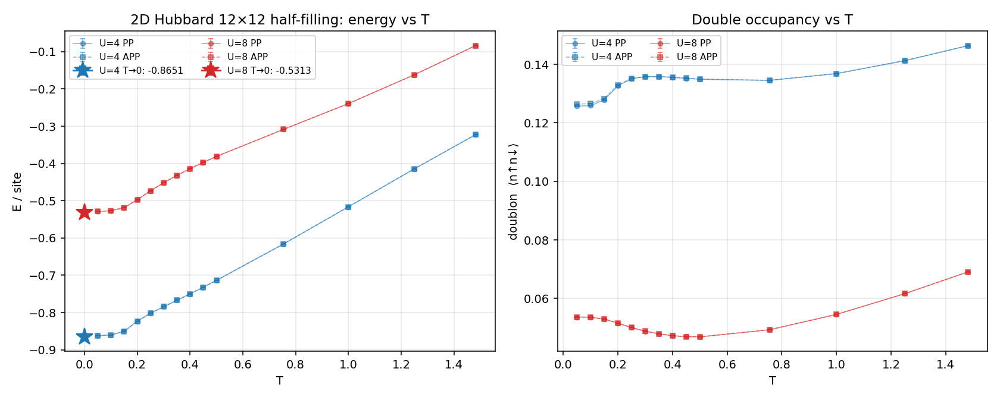
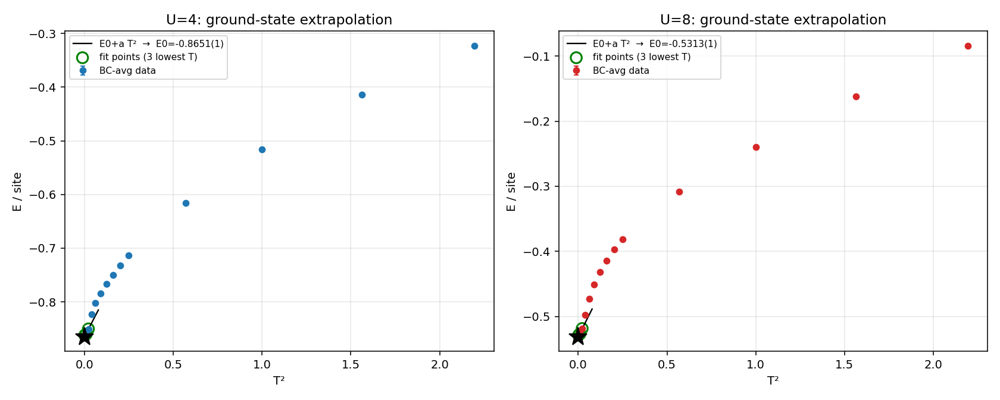

| U | E(T=0.05) | E0 (T² fit) | E0 (T³ fit) | 採用値 E0 |
|---|---|---|---|---|
| 4 | -0.86197(13) | -0.86514(12) | -0.86334(10) | -0.864(2) |
| 8 | -0.52880(12) | -0.53132(11) | -0.52973(9) | -0.530(2) |
| U | bc | T | β | E/site | dE/site | doublon | dD |
|---|---|---|---|---|---|---|---|
| 4 | PP | 1.4815 | 0.675 | -0.322840 | 3.48e-05 | 0.146357 | 6.9e-06 |
| 4 | PP | 1.25 | 0.8 | -0.414394 | 3.90e-05 | 0.141236 | 6.8e-06 |
| 4 | PP | 1 | 1 | -0.516348 | 4.40e-05 | 0.136823 | 6.8e-06 |
| 4 | PP | 0.75472 | 1.325 | -0.615756 | 4.94e-05 | 0.134514 | 7.0e-06 |
| 4 | PP | 0.5 | 2 | -0.713888 | 5.42e-05 | 0.134905 | 7.2e-06 |
| 4 | PP | 0.44944 | 2.225 | -0.732257 | 5.62e-05 | 0.135226 | 7.4e-06 |
| 4 | PP | 0.4 | 2.5 | -0.749816 | 5.72e-05 | 0.135542 | 7.7e-06 |
| 4 | PP | 0.35088 | 2.85 | -0.766940 | 5.92e-05 | 0.135782 | 7.9e-06 |
| 4 | PP | 0.30075 | 3.325 | -0.783990 | 6.10e-05 | 0.135755 | 8.3e-06 |
| 4 | PP | 0.25 | 4 | -0.801746 | 6.78e-05 | 0.135090 | 1.1e-05 |
| 4 | PP | 0.2 | 5 | -0.823219 | 8.19e-05 | 0.132676 | 1.6e-05 |
| 4 | PP | 0.14981 | 6.675 | -0.850010 | 1.01e-04 | 0.127858 | 2.1e-05 |
| 4 | PP | 0.1 | 10 | -0.860201 | 1.72e-04 | 0.125875 | 4.1e-05 |
| 4 | PP | 0.05 | 20 | -0.861792 | 1.50e-04 | 0.125731 | 3.6e-05 |
| 4 | APP | 1.4815 | 0.675 | -0.322846 | 3.48e-05 | 0.146356 | 6.9e-06 |
| 4 | APP | 1.25 | 0.8 | -0.414396 | 3.89e-05 | 0.141237 | 6.8e-06 |
| 4 | APP | 1 | 1 | -0.516367 | 4.36e-05 | 0.136820 | 6.8e-06 |
| 4 | APP | 0.75472 | 1.325 | -0.615724 | 4.91e-05 | 0.134513 | 7.0e-06 |
| 4 | APP | 0.5 | 2 | -0.713777 | 5.44e-05 | 0.134899 | 7.3e-06 |
| 4 | APP | 0.44944 | 2.225 | -0.732332 | 5.60e-05 | 0.135231 | 7.5e-06 |
| 4 | APP | 0.4 | 2.5 | -0.749837 | 5.67e-05 | 0.135545 | 7.6e-06 |
| 4 | APP | 0.35088 | 2.85 | -0.766961 | 5.87e-05 | 0.135805 | 7.8e-06 |
| 4 | APP | 0.30075 | 3.325 | -0.784327 | 6.11e-05 | 0.135795 | 8.9e-06 |
| 4 | APP | 0.25 | 4 | -0.801996 | 6.75e-05 | 0.135226 | 1.1e-05 |
| 4 | APP | 0.2 | 5 | -0.823865 | 1.06e-04 | 0.132925 | 2.3e-05 |
| 4 | APP | 0.14981 | 6.675 | -0.850844 | 1.46e-04 | 0.128291 | 3.4e-05 |
| 4 | APP | 0.1 | 10 | -0.860375 | 1.15e-04 | 0.126552 | 2.5e-05 |
| 4 | APP | 0.05 | 20 | -0.862142 | 2.21e-04 | 0.126406 | 5.3e-05 |
| 8 | PP | 1.4815 | 0.675 | -0.083873 | 4.48e-05 | 0.069085 | 6.3e-06 |
| 8 | PP | 1.25 | 0.8 | -0.161963 | 4.90e-05 | 0.061640 | 6.5e-06 |
| 8 | PP | 1 | 1 | -0.239296 | 5.47e-05 | 0.054558 | 6.9e-06 |
| 8 | PP | 0.75472 | 1.325 | -0.308372 | 8.26e-05 | 0.049313 | 9.8e-06 |
| 8 | PP | 0.5 | 2 | -0.381171 | 8.33e-05 | 0.046896 | 8.5e-06 |
| 8 | PP | 0.44944 | 2.225 | -0.397297 | 9.03e-05 | 0.046982 | 9.0e-06 |
| 8 | PP | 0.4 | 2.5 | -0.413874 | 1.00e-04 | 0.047295 | 9.8e-06 |
| 8 | PP | 0.35088 | 2.85 | -0.431793 | 1.12e-04 | 0.047911 | 1.1e-05 |
| 8 | PP | 0.30075 | 3.325 | -0.451285 | 1.17e-04 | 0.048800 | 1.1e-05 |
| 8 | PP | 0.25 | 4 | -0.473210 | 1.23e-04 | 0.050051 | 1.2e-05 |
| 8 | PP | 0.2 | 5 | -0.497119 | 1.35e-04 | 0.051558 | 1.3e-05 |
| 8 | PP | 0.14981 | 6.675 | -0.518785 | 1.60e-04 | 0.052972 | 1.8e-05 |
| 8 | PP | 0.1 | 10 | -0.526832 | 1.29e-04 | 0.053587 | 1.3e-05 |
| 8 | PP | 0.05 | 20 | -0.528730 | 1.46e-04 | 0.053683 | 1.6e-05 |
| 8 | APP | 1.4815 | 0.675 | -0.083868 | 4.48e-05 | 0.069084 | 6.3e-06 |
| 8 | APP | 1.25 | 0.8 | -0.161978 | 4.90e-05 | 0.061641 | 6.5e-06 |
| 8 | APP | 1 | 1 | -0.239302 | 5.46e-05 | 0.054560 | 6.9e-06 |
| 8 | APP | 0.75472 | 1.325 | -0.308401 | 6.47e-05 | 0.049324 | 7.3e-06 |
| 8 | APP | 0.5 | 2 | -0.381101 | 8.33e-05 | 0.046895 | 8.3e-06 |
| 8 | APP | 0.44944 | 2.225 | -0.397144 | 9.79e-05 | 0.046963 | 9.9e-06 |
| 8 | APP | 0.4 | 2.5 | -0.414116 | 1.85e-04 | 0.047269 | 2.2e-05 |
| 8 | APP | 0.35088 | 2.85 | -0.431830 | 1.03e-04 | 0.047915 | 9.9e-06 |
| 8 | APP | 0.30075 | 3.325 | -0.451469 | 1.15e-04 | 0.048823 | 1.1e-05 |
| 8 | APP | 0.25 | 4 | -0.473471 | 1.33e-04 | 0.050050 | 1.3e-05 |
| 8 | APP | 0.2 | 5 | -0.497341 | 1.32e-04 | 0.051573 | 1.3e-05 |
| 8 | APP | 0.14981 | 6.675 | -0.518388 | 1.44e-04 | 0.052981 | 1.5e-05 |
| 8 | APP | 0.1 | 10 | -0.526813 | 1.22e-04 | 0.053562 | 1.3e-05 |
| 8 | APP | 0.05 | 20 | -0.528871 | 2.03e-04 | 0.053686 | 2.4e-05 |
runs/afqmc-kugui-F1cpu-2d-square-gridT-alt-fc0416a-prebuilt-retry1-20260703/data/production_runs/kugui_F1cpu_2d12x12_U{4,8}_{PP,APP}_dtau0p025_T0p05_..._T0p05fill_20260706/data/analysis/merged_Tsweep_20260706/U{4,8}_{PP,APP}_Tsweep_full.dat, U{4,8}_BCavg_Tsweep.datdata/analysis/merged_Tsweep_20260706/gs_extrapolation.jsonscripts/analyze_2d12x12_full_tsweep.py